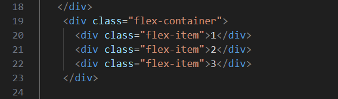
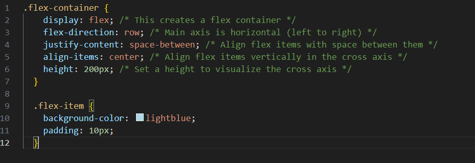

In CSS Flexbox, the "axis" refers to the main direction in which flex items are laid out inside a flex container. There are two axes in Flexbox:
1. Main Axis (also called Flex Container Axis): This axis represents the primary direction in which the flex items are distributed. By default, it is horizontal (left to right) in Western languages (e.g., English), but it can be changed using the `flex-direction` property.
2. Cross Axis (also called Flex Item Axis): This axis is perpendicular to the main axis. It represents the secondary direction in which the flex items align. By default, it is vertical (top to bottom) in Western languages (e.g., English), but it can also be changed depending on the `flex-direction`.
Here's a simple example to demonstrate the main axis and cross axis in Flexbox:
In this example, the `flex-container` class is set to be a flex container using `display: flex`, and its `flex-direction` is set to `row`, which means the main axis is horizontal.
The `justify-content: space-between` property is used to distribute the flex items along the main axis with space between them. So, flex item 1 will be at the leftmost end, flex item 3 will be at the rightmost end, and flex item 2 will be in the center.
The `align-items: center` property is used to align the flex items vertically in the cross axis, which means they will be centered vertically inside the container.
The result will be three flex items placed horizontally in the main axis with equal spacing between them, and they will be centered vertically in the cross axis. The final layout will depend on the `flex-direction`, `justify-content`, and `align-items` properties set for the flex container.

